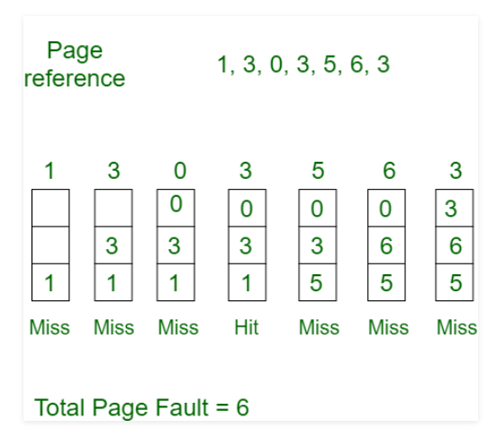

In an operating system, memory management is a crucial topic. It provides ways to dynamically control and coordinate computer memory. Memory management allows allocating a portion of memory when requested by a program. It also
automatically deallocates memory from a program when it is no longer used by a program.
There are various techniques used in memory management. One such method is paging. In paging, page replacement algorithms play an important role and decide which page to keep in the main memory when a new page comes in.
Example:
•Consider page reference string 1, 3, 0, 3, 5, 6 with 3 page frames.Find number of page faults.

Initially all slots are empty, so when 1, 3, 0 came they are allocated to the empty slots —> 3 Page Faults.
when 3 comes, it is already in memory so —> 0 Page Faults.
Then 5 comes, it is not available in memory so it replaces the oldest page slot i.e 1. —>1 Page Fault.
6 comes, it is also not available in memory so it replaces the oldest page slot i.e 3 —>1 Page Fault.
Finally when 3 come it is not available so it replaces 0 1 page fault.
Advantage:
Simple and easy to implement.
Low overhead.
Disadvantage:
Poor performance.
Doesn’t consider the frequency of use or last used time, simply replaces the oldest page.
Suffers from Belady’s Anomaly(i.e. more page faults when we increase the number of page frames).